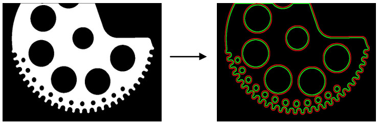

|
类型 |
轮廓 |
|
描述 |
生成一个与输入轮廓或轮廓列表外扩或内缩一定距离的新的平行轮廓或轮廓列表，若输入轮廓或轮廓列表经ZV_ContApproxPolygon多边形逼近处理过后的话，平行或内缩处理会快些。 指令处理过的轮廓点集或变的非连续，但点集个数与输入相同 |
|
语法 |
ZV_ContGenParallel(src,dst,dist)
参数： src：ZVOBJECT类型，轮廓或轮廓列表，轮廓点至少有2个 dst：ZVOBJECT类型，输出，轮廓或轮廓列表 dist：外扩或内缩距离，距离单位与轮廓点单位一致，正数为平行外扩，负数为平行内缩；为零时输出轮廓与输入轮廓相同 |
|
适用控制器 |
支持ZV功能或者5系列以上的控制器 |
|
例子 |
 ZVOBJECT img,img_bw,cont_list ZV_ImgRead(img,"count1.jpg",0) '读取图片 ZV_ImpThresh(img,img_bw,200,255) '图像二值化 ZV_ContGen(img_bw,cont_list,1,0) '查找轮廓
' 对每个轮廓生成平行轮廓并绘制结果 LOCAL cont_size,i ZVOBJECT gray,dst,cont,cont_dst ZV_ImgCopy(img,gray) '复制图像 ZV_ImgSetConst(gray,0) '常数填充图像 ZV_ImpGrayToRgb(gray,dst) '灰度图转彩色图 cont_size= ZV_ObjCount(cont_list) '获取轮廓个数 FOR i = 0 TO cont_size-1 ZV_ObjSelect(cont_list,cont,i) '获取某个轮廓 ZV_DraContour(dst,cont,ZV_DraColor(0,255,0)) '绘制原图像轮廓为绿色 ZV_ContGenParallel(cont,cont_dst,5) '生成一个平行外扩5距离的新轮廓 ZV_DraContour(dst,cont_dst,ZV_DraColor(255,0,0)) '绘制新轮廓为红色 NEXT |